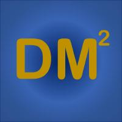

DM2 Lab: Data Mining towards Decision Making
"We develop data-driven computational methods and intelligent systems to facilitate decision making." -- dm_square
Computational Behavior Modeling: User modeling, Recommender system, Fraud detection; Graph machine learning, Graph anomaly detection, Dynamic graph modeling; Information extraction, Named entity recognition, Taxonomy construction, Knowledge graph construction; Natural language generation, answer retrieval, question generation, summarization; Intelligent assistance.
Faculty

|
Email: mjiang2 [at] nd.edu
|
 |
Check our repositories!
|
Current Graduate Students

|
Qingkai Zeng: PhD candidate (2018-)
Email: qzeng [at] nd.edu
Information extraction, Taxonomy construction
First authored in 1 KDD, 1 EMNLP
|

|
Wenhao Yu: PhD candidate (2019-); CSE Select Fellowship; Bloomberg Data Science Fellowship
Email: wyu1 [at] nd.edu
Natural language generation
First authored in 3 ACL, 1 NAACL, 2 EMNLP, 1 EMNLP demo, 2 WWW, 1 WWW demo, 1 CSUR
|

|
Mengxia Yu: PhD student (2020-); CSE Select Fellowship
Email: myu2 [at] nd.edu
Natural language generation, Scientific text mining
|
Lingbo Tong: PhD student (2020-); Psychology-CSE Joint Program
Email: ltong2 [at] nd.edu
Natural language processing, Social media analysis
|

|
Zhihan Zhang: PhD student (2021-)
Email: zzhang23 [at] nd.edu
Natural language processing, Question answering
|

|
Gang Liu: PhD student (2021-)
Email: gliu7 [at] nd.edu
Graph machine learning
First authored in 1 KDD
|

|
Eric Inae: PhD student (2022-); Dean's Fellowship
Email: einae [at] nd.edu
Graph machine learning
|
Hy Dang: PhD student (2022-)
Email: hdang [at] nd.edu
Knowledge graph, Social media, Mental health
|
|
Noah Ziems: PhD student (2022-); CSE Select Fellowship
Email: nziems2 [at] nd.edu
Natural language processing, Question answering
|

|
Bang Nguyen: PhD student (2022-)
Email: bnguyen5 [at] nd.edu
Natural language processing, Online education
|
|
Nandini Banerjee: PhD student (2022-)
Email: nbanerje [at] nd.edu
Natural language processing, Social media analysis
|
Luke Siela: Master student (2021-)
Email: lsiela [at] nd.edu
Data Science
|
Current Undergraduate Students

|
Yunxiang Yan: REU (2021-)
Graph anomaly detection
|

|
Weike Fang: REU (2022-)
Natural langauge generation
|
Past Graduate Students

|
Daheng Wang: PhD (2021)
Email: dwang8 [at] nd.edu
User modeling, Graph representation learning, Dynamic graph modeling
First authored in 3 KDD, 1 WWW, 1 ICDM, 1 TKDE, 1 TNNLS, 1 TIST, 1 KDD-DLG best paper
First employment: Research Scientist at Amazon.com
|

|
Tong Zhao: PhD (2022) with Snap Fellowship
Email: tzhao2 [at] nd.edu
Graph machine learning, Data augmentation, Anomaly detection,
First authored in 2 CIKM, 1 AAAI, 1 ICML, 1 IEEE TNNLS, 1 BigData
First employment: Research Scientist at Snap Inc.
|

|
Xueying Wang: Master's Degree (2019)
Email: xwang41 [at] nd.edu
First authored in 1 WWW and 1 KAIS
Information extraction
Employment: Data Scientist at FedEx
|

|
Bhakti Sharma: Master's Degree (2020)
Email: bsharma2 [at] nd.edu
Natural language processing, Sentiment analysis
Employment: SDE at VISO Trust
|

|
Jianing Li: Master's Degree (2020)
Email: jli23 [at] nd.edu
Deep transfer learning
|

|
Tianwen Jiang: Visiting PhD student (2018-2019)
Email: tjiang2 [at] nd.edu
Information extraction
|
Past Undergraduate Research Assistants
- Alvin Alaphat (01/2020-05/2020): Predicting outcomes of NSF projects from abstracts (First author in BigData-BTSD'20).
- Xiangyu Dong (09/2019-05/2020): News generation using NLP (First author in a work under review).
- Zaitang Li (09/2019-05/2020): Survey on natural language generation (Third author in the survey).
- Matthew Malir (01/2018-05/2018): Actionable fraud detection (Second author in BigData'18).
- Bo Ni (09/2019-02/2021): Graph learning for fraud detection (Co-first author in KDD-DLG'20 and CRA Outstanding Undergraduate Research Award Honorable Mention).
- Chan Hee (Luke) Song (09/2019-03/2020): Question answering for NER. (Now PhD student at the Ohio State University)
- Yuhan (Tina) Wu (09/2018-05/2019): Supervised topic modeling.
|
Michael Lee: REU (05/2020-05/2021)
Analyzing helpfulness of responses to suicidal thoughts
|
Fangcong Yin: REU (09/2020-08/2021)
Diverse text generation
|
|
Joseph Kuebler: REU (01/2021-05/2021)
Scientific fact extraction
First authored in 1 IEEE ICBK
|
Ann Hermann: REU (05/2020-08/2021)
Extracting profiles and social networks from Chinese history text
|

|
Jackson Ballow: REU (09/2021-05/2022)
Graph machine learning
|
Ryan Pairitz: REU (01/2022-05/2022)
Graph machine learning
|
Past iSure Program Undergraduate Students
- Chuchen Deng (05/2019-08/2019): Anomaly detection (Second author in KDD-DLG'20 and Second author in CIKM'20).
- Yihong Ma (05/2019-08/2019): Information extraction (First author in CIKM-EYRE'19 and Third author in KDD-DLG'20).
- Yu Shu (05/2018-08/2018): Information extraction from tabular data (Third author in WWW'20).
- Kaifeng Yu (07/2019-08/2019): Anomaly detection (Third author in KDD-DLG'20 and Third author in CIKM'20).
- Mengxia Yu (07/2019-08/2019): Information extraction (Second author in EMNLP-TextGraphs'19 and Second author in WWW'20).
- Wenhao Yu (05/2018-08/2018): Information extraction (First author in WWW'19 and First author in WWW'20).
- Zhihan Zhang (07/2019-08/2019): Graph-based literature search (Co-first author in BIBM'19 and Second author in KDD-DLG'20).
- Yang Zhou (07/2019-08/2019): Information extraction from news data (First author in ACL-FEVER'20).
Past Highschool Students
- Michael Florin (09/2019-07/2020): Analyzing peer responses on Reddit to suicidal intention.
- Eric Zhang (09/2018-07/2020): Predicting user gender based on clicked news articles.
- Rebekah Fang and Libby Garnett (09/2020-12/2021): Predicting the category of emotional support in responses to suicidal thoughts: Won the second place in the 2021 Northern Indiana Regional Science and Engineering Fair. Recommended to the 33rd Annual Hoosier Science and Engineering Fair (HSEF).
Group Photos
 September 2018 @ Cushing Hall
September 2018 @ Cushing Hall
|
 July 2019 @ Fitzpatrick Hall
July 2019 @ Fitzpatrick Hall
|
 May 2022 @ Potato Creek State Park
May 2022 @ Potato Creek State Park
|
Selected Publications: Text Mining and Natural Language Processing
- Diversifying Content Generation for Commonsense Reasoning with Mixture of Knowledge Graph Experts by W. Yu, C. Zhu, L. Qin, T. Zhao, M. Jiang. Findings of Annual Meeting of the Association for Computational Linguistics (ACL), 2022.
- Dict-BERT: Enhancing Language Model Pre-training with Dictionary by W. Yu, C. Zhu, Y. Fang, D. Yu, S. Wang, Y. Xu, M. Zeng, M. Jiang. Findings of Annual Meeting of the Association for Computational Linguistics (ACL), 2022.
- Biomedical Knowledge Graphs Construction from Conditional Statements by T. Jiang, Q. Zeng, T. Zhao, B. Qin, T. Liu, N. Chawla, M. Jiang. IEEE/ACM Transactions on Computational Biology and Bioinformatics (TCBB), 2021. [DOI]
- Multi-Round Parsing-based Multiword Rules for Scientific OpenIE by J. Kuebler, L. Tong, M. Jiang. International Conference on Big Knowledge (ICBK), 2021.
- Sentence-Permuted Paragraph Generation by W. Yu, C. Zhu, T. Zhao, Z. Guo, M. Jiang. Empirical Methods on Natural Language Processing (EMNLP), 2021.
- Injecting Entity Types into Entity-Guided News Generation by X. Dong*, W. Yu*, C. Zhu, M. Jiang. Empirical Methods on Natural Language Processing (EMNLP), 2021.
- Enhancing Taxonomy Completion with Concept Generation via Fusing Relational Representations by Q. Zeng, J. Lin, W. Yu, J. Cleland-Huang, M. Jiang. ACM SIGKDD International Conference on Knowledge Discovery and Data Mining (KDD), 2021. [DOI]
- Technical Question Answering across Tasks and Domains by W. Yu, L. Wu, Q. Zeng, Y. Deng, R. Mahindru, S. Guven, M. Jiang. Conference of the North American Chapter of the Association for Computational Linguistics - Human Language Technologies (NAACL-HTL), 2021. [DOI]
- Enhancing Factual Consistency of Abstractive Summarization by C. Zhu, W. Hinthorn, R. Xu, Q. Zeng, M. Zeng, X. Huang, M. Jiang. Conference of the North American Chapter of the Association for Computational Linguistics - Human Language Technologies (NAACL-HLT), 2021. [DOI]
- TCN: Table Convolutional Network for Web Table Interpretation by D. Wang, P. Shiralkar, C. Lockard, B. Huang, X.L. Dong, M. Jiang. The Web Conference (TheWebConf), 2021. [DOI]
- Precise Temporal Slot Filling via Truth Finding with Data-Driven Commonsense by X. Wang, M. Jiang. Knowledge and Information Systems, 2020. [DOI] [bibtex]
- Phrase-level Pairwise Topic Modeling to Uncover Helpful Peer Responses to Online Suicidal Crises by M. Jiang, B.A. Ammerman, Q. Zeng, R. Jacobucci, A. Brodersen. Nature Humanities and Social Sciences Communications, 2020. [DOI] [bibtex]
- Use of Internal Knowledge: Biomedical Literature Search Liberated From External Resources by T. Jiang, N. Zhang, M. Liu, M. Jiang, T. Liu, B. Qin. IEEE International Conference on Bioinformatics and Biomedicine (BIBM), 2020. [DOI]
- A Technical Question Answering System with Transfer Learning by W. Yu, L. Wu, Y. Deng, R. Mahindru, Q. Zeng, S. Guven, M. Jiang. Findings of Empirical Methods on Natural Language Processing (EMNLP), 2020. (demo) [DOI] [github] [video]
- Tri-Train: Automatic Pre-fine Tuning between Pre-training and Fine-tune Training for SciNER by Q. Zeng, W. Yu, M. Yu, T. Jiang, T. Weninger, M. Jiang. Findings of Empirical Methods on Natural Language Processing (EMNLP), 2020. [DOI]
- Crossing Variational Autoencoders for Answer Retrieval by W. Yu, L. Wu, Q. Zeng, S. Tao, Y. Deng, M. Jiang. Annual Meeting of the Association for Computational Linguistics (ACL), 2020. [DOI] [bibtex]
- Experimental Evidence Extraction in Data Science with Hybrid Table Features and Ensemble Learning by W. Yu, W. Peng, Y. Shu, Q. Zeng, M. Jiang. The Web Conference (TheWebConf), 2020. [DOI] [bibtex]
- CTGA: Graph-based Biomedical Literature Search by T. Jiang, Z. Zhang, T. Zhao, B. Qin, T. Liu, N. Chawla, M. Jiang. IEEE International Conference on Bioinformatics and Biomedicine (BIBM), 2019. [DOI] [bibtex]
- Multi-input Multi-output Sequence Labeling for Joint Extraction of Fact and Condition Tuples from Scientific Text by T. Jiang, T. Zhao, B. Qin, T. Liu, N. Chawla, M. Jiang. Conference on Empirical Methods in Natural Language Processing (EMNLP), 2019. [DOI] [bibtex]
- The Role of 'Condition': A Novel Scientific Knowledge Graph Representation and Construction Model by T. Jiang, T. Zhao, B. Qin, T. Liu, N. Chawla, M. Jiang. ACM SIGKDD International Conference on Knowledge Discovery and Data Mining (KDD), 2019. [DOI] [bibtex]
- Tablepedia: Automating PDF Table Reading in an Experimental Evidence Exploration and Analytic System by W. Yu, Z. Li, Q. Zeng, M. Jiang. The Web Conference (TheWebConf), 2019. (demo) [DOI] [bibtex]
- A Novel Unsupervised Approach for Precise Temporal Slot Filling from Incomplete and Noisy Temporal Contexts by X. Wang, H. Zhang, Q. Li, Y. Shi, M. Jiang. The Web Conference (TheWebConf), 2019. [DOI] [bibtex]
Selected Publications: Representation Learning and Network Science
- Graph Rationalization with Environment-based Augmentations by G. Liu, T. Zhao, J. Xu, T. Luo, M. Jiang. ACM SIGKDD International Conference on Knowledge Discovery and Data Mining (KDD), 2022.
- Learning from Counterfactual Links for Link Prediction by T. Zhao, G. Liu, D. Wang, W. Yu, M. Jiang. International Conference on Machine Learning (ICML), 2022.
- Deep Multimodal Complementarity Learning by D. Wang, T. Zhao, W. Yu, N.V. Chawla, M. Jiang. IEEE Transactions on Neural Networks and Learning Systems (TNNLS), 2022. [DOI]
- A Survey on Data-Driven Network Intrusion Detection by D. Chou, M. Jiang. ACM Computing Surveys (CSUR), 2022. [DOI]
- A Synergistic Approach for Graph Anomaly Detection with Pattern Mining and Feature Learning by T. Zhao, T. Jiang, N. Shah, M. Jiang. IEEE Transactions on Neural Networks and Learning Systems (TNNLS), 2021. [DOI]
- Modeling Co-evolution of Attributed and Structural Information in Graph Sequence by D. Wang, Z. Zhang, Y. Ma, T. Zhao, T. Jiang, N.V. Chawla, M. Jiang. IEEE Transactions on Knowledge and Data Engineering (TKDE), 2021. [DOI]
- Structural and Textual Information Fusion for Symptom and Disease Representation Learning by S. Zhao, M. Jiang, B. Qin, T. Liu, C.X. Zhai, F. Wang. IEEE Transactions on Knowledge and Data Engineering (TKDE), 2021. [DOI]
- Modeling Complementarity in Behavior Data with Multi-Type Itemset Embedding by D. Wang, Q. Zeng, N.V. Chawla, M. Jiang. ACM Transactions on Intelligent Systems and Technology (TIST), 2021. [DOI]
- Inductive Contextual Relation Learning for Personalization by C. Zhang, H. Yao, L. Yu, C. Huang, D. Song, M. Jiang, H. Chen, N.V. Chawla. ACM Transactions on Information Systems (TOIS), 2021. [DOI]
- Dynamic Attributed Graph Prediction with Conditional Normalizing Flows by D. Wang, T. Zhao, N.V. Chawla, M. Jiang. International Conference on Data Mining (ICDM), 2021.
- Action Sequence Augmentation for Early Graph-based Anomaly Detection by T. Zhao, B. Ni, W. Yu, Z. Guo, N. Shah, M. Jiang. ACM International Conference on Information and Knowledge Management (CIKM), 2021.
- Cross-Network Learning with Partially Aligned Graph Convolutional Networks by M. Jiang. ACM SIGKDD International Conference on Knowledge Discovery and Data Mining (KDD), 2021. [DOI]
- Few-Shot Graph Learning for Molecular Property Prediction by Z. Guo, C. Zhang, W. Yu, J. Herr, O. Wiest, M. Jiang, N.V. Chawla. The Web Conference (TheWebConf), 2021. [DOI]
- Data Augmentation for Graph Neural Networks by T. Zhao, Y. Liu, L. Neves, O. Woodford, M. Jiang, N. Shah. AAAI Conference on Artificial Intelligence (AAAI), 2021. [slides]
- Few-Shot Multi-Hop Relation Reasoning over Knowledge Bases by C. Zhang, L. Yu, M. Saebi, M. Jiang, N. Chawla. Findings of Empirical Methods on Natural Language Processing (EMNLP), 2020. [DOI]
- GraSeq: Graph and Sequence Fusion Learning for Molecular Property Prediction by Z. Guo, W. Yu, C. Zhang, M. Jiang, N. Chawla. ACM International Conference on Information and Knowledge Management (CIKM), 2020. [DOI]
- Error-bounded Graph Anomaly Loss for GNNs by T. Zhao, C. Deng, K. Yu, T. Jiang, D. Wang, M. Jiang. ACM International Conference on Information and Knowledge Management (CIKM), 2020. [DOI]
- Calendar Graph Neural Networks for Modeling Time Structures in Spatiotemporal User Behaviors by D. Wang, M. Jiang, M. Syed, O. Conway, V. Juneja, S. Subramanian, N. Chawla. ACM SIGKDD International Conference on Knowledge Discovery and Data Mining (KDD), 2020. [DOI]
- Improving Situational Awareness with Collective Artificial Intelligence over Knowledge Graphs by M. Jiang. Artificial Intelligence and Machine Learning for Multi-Domain Operations Applications II in SPIE Defense + Commercial Sensing Symposium, 2020. [DOI] [bibtex]
- Identifying Referential Intention with Heterogeneous Contexts by W. Yu, M. Yu, T. Zhao, M. Jiang. The Web Conference (TheWebConf), 2020. [DOI] [bibtex]
- Multi-label Patent Categorization with Non-local Attention-based Graph Convolutional Network by P. Tang, M. Jiang, N. Xia, J. Pitera, J. Welser, N. Chawla. AAAI Conference on Artificial Intelligence (AAAI), 2020.
- Few-Shot Knowledge Base Completion by C. Zhang, H. Yao, M. Jiang, Z. Li, N. Chawla. AAAI Conference on Artificial Intelligence (AAAI), 2020.
- Graph Few-shot Learning via Knowledge Transfer by H. Yao, C. Zhang, Y. Wei, M. Jiang, S. Wang, N. Chawla, Z. Li. AAAI Conference on Artificial Intelligence (AAAI), 2020.
- TUBE: Embedding Behavior Outcomes for Predicting Success by D. Wang, T. Jiang, N. Chawla, M. Jiang. ACM SIGKDD International Conference on Knowledge Discovery and Data Mining (KDD), 2019. [DOI] [bibtex]
Sponsors
Research work has been supported by National Science Foundation, Amazon.com, Snap Research, Condé Nast Inc., and Global Gateway.
- NSF SHF: Medium: Collaborative Research: Semantically-Enhanced Software Traceability for Supporting Human-Centric Tasks (08/15/2019 - 08/14/2023) [NSF page]
- NSF RETTL: Collaborative Research: Advancing STEM Online Learning by Augmenting Accessibility with Explanatory Captions and AI (09/15/2021 - 08/31/2024) [NSF page]
- NSF III: Small: Comprehensive Methods to Learn to Augment Graph Data (03/01/2022 - 02/28/2025) [NSF page]
- NSF CAREER: Synergistic Approaches for Specialized Intelligent Assistance (03/15/2022 - 02/28/2027) [NSF page]
- Condé Nast: Representation Learning for Modeling and Predicting User Engagement and Propensity for Conversion Through the Engagement Funnel (01/21/2019 - 05/20/2020)
- Global Gateway: Digital Empires: Structured Biographical and Social Network Analysis of Early Chinese Empires (05/01/2019 - 08/31/2020)
- NSF CRII: III: Complementarity Learning for Contextual Behavior Modeling (10/01/2019 - 09/30/2021) [NSF page]

|

|

|

|

|

|

|

|

|